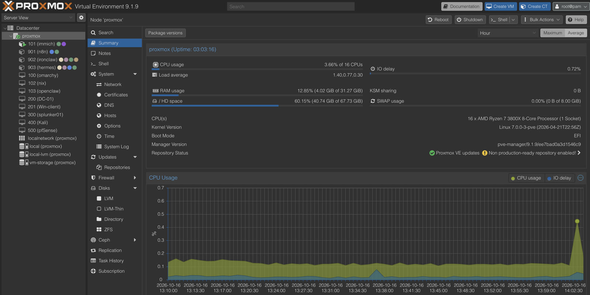

Homelab
A small enterprise network on one tower: a Windows domain, a firewall, a SIEM, and a GPU-passthrough desktop I can reach from anywhere. It now also hosts my photos, my automations and my Linux club demos.
Why I built it
I started this while studying for CompTIA Security+. I wanted an Active Directory lab to practice on, but the only machine I had with enough power to run one was my desktop, and I wanted to reach the lab from anywhere on campus.
I'd already run a lab under a type 2 hypervisor, and losing performance to the host OS bothered me. So I set three requirements: bare metal, headless, and remote, with the GPU passed through so the same tower could still be my everyday desktop. That led me to Proxmox VE.
The result is a small enterprise network on one machine: a Windows domain, a firewall between the lab and my home network, a SIEM collecting logs, and an attack box to test it all with. I reach every part of it from my laptop or phone over Tailscale.
What's running
One node runs everything: eight VMs and four LXC containers. IDs are grouped by role, so the number tells you what a machine does.
- cpu
- AMD Ryzen 7 3800X · 8 cores / 16 threads
- memory
- 32 GB
- hypervisor
- Proxmox VE 9.1 · KVM + LXC · EFI boot
- storage
- local · local-lvm · vm-storage
| id | name | os | role |
|---|---|---|---|
| 100 | omarchy | Arch Linux | my desktop, with the GPU passed through |
| 101 | immich | LXC container | Immich, my self-hosted photo library |
| 102 | nix | NixOS | sandbox |
| 103 | openclaw | Linux | OpenClaw agent |
| 200 | DC-01 | Windows Server 2022 | domain controller: AD DS, DNS, DHCP, Group Policy |
| 201 | Win-client | Windows 11 | domain-joined endpoint |
| 300 | splunker01 | Ubuntu Server | Splunk Enterprise (SIEM) |
| 400 | Kali | Kali Linux | attack box |
| 500 | pfSense | pfSense | router and firewall between home and lab |
| 901 | n8n | LXC container | n8n for simple automations |
| 902 | ironclaw | LXC container | IronClaw agent, part of DJWYA's first scraper |
| 903 | hermes | LXC container | agent testing |

Network
The node has two Linux bridges. vmbr0 sits on my home network. vmbr1 is the lab's own switch, and its only way out is through pfSense. Anything I run in the lab, malware included, stays behind a firewall I control.
Inside the lab, the domain controller hands out DNS and DHCP, and the Windows machines forward their logs to Splunk. From outside, Tailscale gets me in without opening a single port on my router.
Redrawn from my original draw.io diagram ↗

What I set up
-
Bare-metal hypervisor
Proxmox VE installed directly on the tower, instead of a type 2 hypervisor running on a desktop OS. There's no host OS taking a cut, and the whole node is managed from the web UI on port 8006.
-
Segmented network
pfSense is the virtual router and firewall, with a hard boundary between my home network and the lab. Attacks and malware I run in the lab can't reach the rest of the house.
-
Active Directory
Windows Server 2022 is the domain controller for
cyber.lab, running AD DS, DNS and DHCP. A Windows 11 client is joined to the domain, and Group Policy Objects push security baselines to it. It's the same day-to-day admin work an IT team does. -
Central logging
Splunk Enterprise runs on Ubuntu Server. Universal Forwarders on the Windows hosts ship events on port 9997, and Sysmon with the SwiftOnSecurity config records process creation and network connections.
-
GPU passthrough
The physical graphics card is passed through over PCIe to an Arch Linux VM. The VM gets near-native graphics, and the tower still works as my everyday desktop.
-
Remote access
Sunshine on the VM encodes with the GPU's NVENC encoder, and Moonlight on my laptop or phone plays it back. Tailscale carries all of it, encrypted and peer-to-peer.
From laggy RDP to a daily driver
Building the lab was the easy part. Making the same box usable as my desktop from anywhere took the most work:
- beforeA lab inside my desktop OS My first lab ran under a type 2 hypervisor. It worked, but I was losing performance to the host, and I couldn't reach it away from my desk.
- rebuildProxmox on bare metal I reinstalled the tower with Proxmox VE as a type 1 hypervisor. The machine went headless, and everything now goes through the web UI.
- problemRDP and noVNC weren't enough Both were fine for admin tasks, but the latency was too high to use a VM as my everyday desktop.
- fixPCIe GPU passthrough I dedicated the physical graphics card to the Arch Linux VM. This was the hardest part of the build: when it didn't work, the cause could be in the hardware, the hypervisor or the guest, and I had to work out which.
- fixSunshine and Moonlight Sunshine streams the VM using NVENC, and Moonlight plays it back with under 50 ms of latency. It's fast enough to work, and even game, from anywhere.
- remoteTailscale Tailscale put the lab on a private network I can reach from anywhere, with no ports forwarded. Once it worked I added more of my devices to the tailnet, and it now links the machines across my other projects.
- later
Testing it
- Attack, then look. From kali01 I ran Nmap scans and LLMNR/NBT-NS poisoning against the domain, then switched to Splunk to see what they left behind. Both showed up, which confirmed the logging pipeline worked end to end.
- Detections. I wrote Splunk queries that match the specific artifacts those attacks leave, so the logs aren't just collected but searched.
- Containment. The lab only reaches my home network through pfSense, and nothing is exposed to the internet. Remote access goes through Tailscale.
- Updates. The node pulls from Proxmox's no-subscription repository, which the dashboard flags as not production-ready. That's fine for a lab. A production cluster would use the enterprise repository.
- Next. Scheduled backups of the domain controller and SIEM, so a bad update is a restore instead of a rebuild.
What it does now
My Security+ study tapered off, but the node didn't go idle. It became the general-purpose server I lean on for everything else:
-
Linux club demos
I'm vice president of RUSLUG, the Rutgers student Linux user group. When we want to look at a new distro, for new members or just for me, I spin it up as a VM and demo it live, without installing anything on anyone's laptop.
-
Immich
Immich, a self-hosted photo library, runs in its own container, so my photos back up to hardware I own.
-
n8n
An n8n container runs simple automated workflows. DJWYA's first scrapers ran here too, before they moved to an always-on Chromebox.
-
A PCIe KVM for when it's off
A headless server has one weak spot: Tailscale only works once the OS is up, so if the node was off or stuck, I couldn't reach it. I installed a PCIe KVM card, which gives me its screen, keyboard and power button over the network, all the way down to the BIOS. Now I can shut it down to save power and boot it again remotely. It's the homelab version of the out-of-band management that rack servers have built in.
What carries over
I went in to study security, and that phase was short. The infrastructure is what stuck: installing a hypervisor on bare metal, wiring bridges and a firewall, standing up a domain with DNS, DHCP and Group Policy, getting logs from every endpoint into one place, and making all of it reachable remotely without exposing anything.
Those are the same jobs an IT team does every day, at the scale of one tower. GPU passthrough taught me the most, because it made me troubleshoot across layers, from the PCIe hardware through the hypervisor to the guest OS.
Stack
- compute
- network
- identity
- logging
- remote
- services
- testing